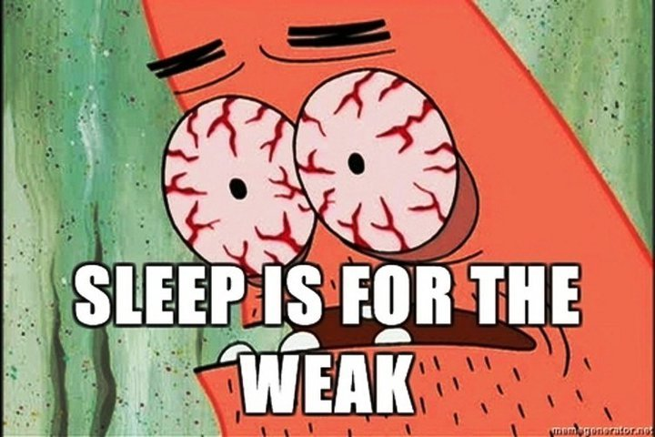
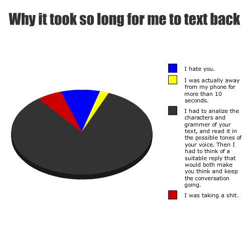
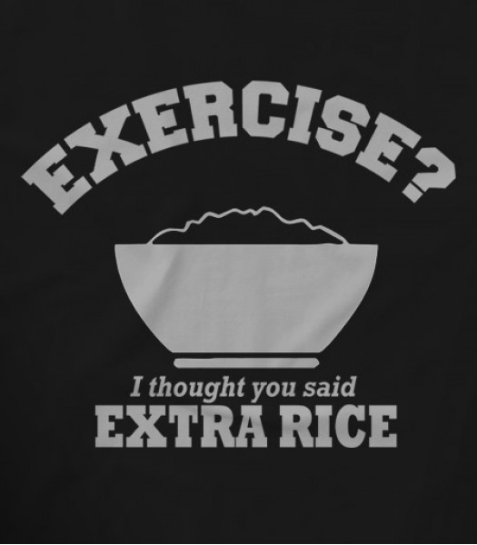
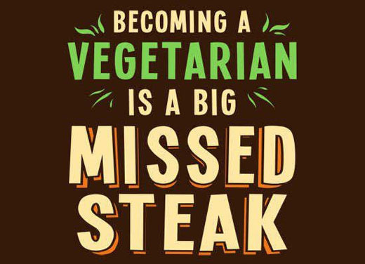
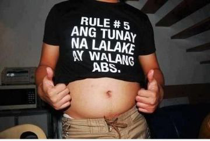
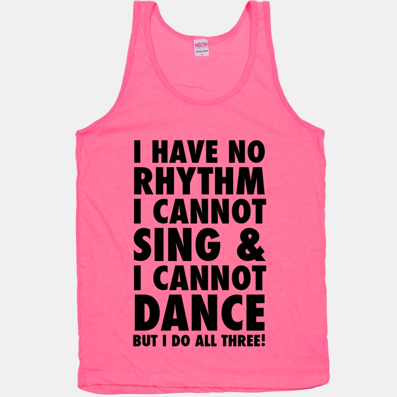
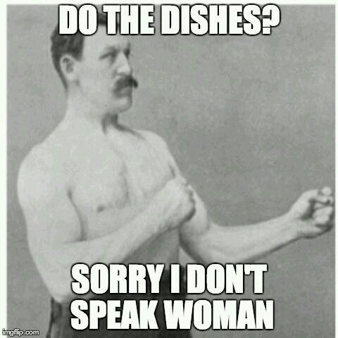

'Sampong Manifesto ng tunay na lalake".
1. Ang tunay na lalake ay di natutulog.
#SleepIsForTheWeak! Bata lang ang natutulog sa tanghali at hapon.

2. Ang tunay na lalake ay di nagte-text-back, maliban na lang kung papasahan ng load. Gayunpaman, laging malabo ang kanyang mga sagot.
Ang tunay na lalake, tamad mag reply o matipid sumagot.

3. Ang tunay na lalake ay laging may extra rice.
Hindi sapat ang isa, kaya dapat laging may reserba.

4. Ang tunay na lalake ay hindi vegetarian.
Bacon, the main reason why men are not vegetarian.

5. Ang tunay na lalake ay walang abs.
#WalangAbsWalangProblema

6. Ang tunay na lalake ay hindi sumasayaw.
Parehas na kaliwa ang paa ng tunay na lalake.

7. Ang tunay na lalake ay umaamin ng pagkakamali sa kapwa tunay na lalake.
#Bromance
8. Ang tunay na lalake ay laging may tae sa brief.
I farted... It was wet.
9. Ang tunay na lalake ay di naghuhugas ng pinagkainan o nagliligpit ng kanyang mga gamit dahil may babaeng gagawa noon para sa kanya. Mas lalong nagiging tunay ang pagkalalake kung di niya kilala o di niya maalala ang pangalan ng babae.
#NoGenderBiasHere

10. Ang tunay na lalake ay hindi babaero.
The Golden rule. Being babaero doesn't make you gwapo. It makes you gag*.